Introduction to modelling with sdmTMB
2024-03-26
Source:vignettes/web_only/basic-intro.Rmd
basic-intro.RmdIf the code in this vignette has not been evaluated, a rendered version is available on the documentation site under ‘Articles’.
In this vignette, we describe the basic steps to fitting a spatial or spatiotemporal GLMM with sdmTMB. This type of model can be useful for (dynamic, i.e. changing through time) species distribution models and relative abundance index standardization among many other uses. See the model description for full model structure and equations.
We will use built-in package data for Pacific cod from a fisheries independent trawl survey.
- The density units are kg/km2 as calculated from catch biomass, net characteristics, and time on bottom.
- X and Y are coordinates in UTM zone 9. We could add these to a new
dataset with
sdmTMB::add_utm_columns(). - Depth was centered and scaled by its standard deviation so that coefficient sizes weren’t too big or small.
- There are columns for depth (
depth_scaled) and depth squared (depth_scaled2).
glimpse(pcod)
#> Rows: 2,143
#> Columns: 12
#> $ year <int> 2003, 2003, 2003, 2003, 2003, 2003, 2003, 2003, 2003, 20…
#> $ X <dbl> 446.4752, 446.4594, 448.5987, 436.9157, 420.6101, 417.71…
#> $ Y <dbl> 5793.426, 5800.136, 5801.687, 5802.305, 5771.055, 5772.2…
#> $ depth <dbl> 201, 212, 220, 197, 256, 293, 410, 387, 285, 270, 381, 1…
#> $ density <dbl> 113.138476, 41.704922, 0.000000, 15.706138, 0.000000, 0.…
#> $ present <dbl> 1, 1, 0, 1, 0, 0, 0, 0, 0, 1, 0, 0, 0, 0, 0, 0, 0, 0, 0,…
#> $ lat <dbl> 52.28858, 52.34890, 52.36305, 52.36738, 52.08437, 52.094…
#> $ lon <dbl> -129.7847, -129.7860, -129.7549, -129.9265, -130.1586, -…
#> $ depth_mean <dbl> 5.155194, 5.155194, 5.155194, 5.155194, 5.155194, 5.1551…
#> $ depth_sd <dbl> 0.4448783, 0.4448783, 0.4448783, 0.4448783, 0.4448783, 0…
#> $ depth_scaled <dbl> 0.3329252, 0.4526914, 0.5359529, 0.2877417, 0.8766077, 1…
#> $ depth_scaled2 <dbl> 0.11083919, 0.20492947, 0.28724555, 0.08279527, 0.768440…The most basic model structure possible in sdmTMB replicates a GLM as
can be fit with glm() or a GLMM as can be fit with lme4 or
glmmTMB, for example. The spatial components in sdmTMB are included as
random fields using a triangulated mesh with vertices, known as knots,
used to approximate the spatial variability in observations. Bilinear
interpolation is used to approximate a continuous spatial field (Rue et
al., 2009; Lindgren et al., 2011) from the estimated values of the
spatial surface at these knot locations to other locations including
those of actual observations. These spatial random effects are assumed
to be drawn from Gaussian Markov random fields (e.g., Cressie &
Wikle, 2011; Lindgren et al., 2011) with covariance matrices that are
constrained by Matérn covariance functions (Cressie & Wikle,
2011).
There are different options for creating the spatial mesh (see
sdmTMB::make_mesh()). We will start with a relatively
coarse mesh for a balance between speed and accuracy
(cutoff = 10, where cutoff is in the units of X and Y (km
here) and represents the minimum distance between knots before a new
mesh vertex is added). Smaller values create meshes with more knots. You
will likely want to use a higher resolution mesh (more knots) in applied
scenarios, but care must be taken to avoid overfitting. The circles
represent observations and the vertices are the knot locations.
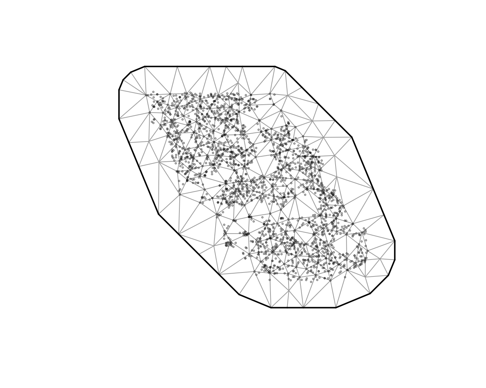
We will start with a logistic regression of Pacific cod presence in
tows as a function of depth and depth squared. We will first use
sdmTMB() without any spatial random effects
(spatial = "off"):
m <- sdmTMB(
data = pcod,
formula = present ~ depth_scaled + depth_scaled2,
mesh = mesh, # can be omitted for a non-spatial model
family = binomial(link = "logit"),
spatial = "off"
)
m
#> Model fit by ML ['sdmTMB']
#> Formula: present ~ depth_scaled + depth_scaled2
#> Mesh: mesh (isotropic covariance)
#> Data: pcod
#> Family: binomial(link = 'logit')
#>
#> coef.est coef.se
#> (Intercept) 0.57 0.06
#> depth_scaled -1.04 0.07
#> depth_scaled2 -0.99 0.06
#>
#> ML criterion at convergence: 1193.035
#>
#> See ?tidy.sdmTMB to extract these values as a data frame.
AIC(m)
#> [1] 2392.07For comparison, here’s the same model with glm():
m0 <- glm(
data = pcod,
formula = present ~ depth_scaled + depth_scaled2,
family = binomial(link = "logit")
)
summary(m0)
#>
#> Call:
#> glm(formula = present ~ depth_scaled + depth_scaled2, family = binomial(link = "logit"),
#> data = pcod)
#>
#> Coefficients:
#> Estimate Std. Error z value Pr(>|z|)
#> (Intercept) 0.56599 0.05979 9.467 <2e-16 ***
#> depth_scaled -1.03590 0.07266 -14.258 <2e-16 ***
#> depth_scaled2 -0.99259 0.06066 -16.363 <2e-16 ***
#> ---
#> Signif. codes: 0 '***' 0.001 '**' 0.01 '*' 0.05 '.' 0.1 ' ' 1
#>
#> (Dispersion parameter for binomial family taken to be 1)
#>
#> Null deviance: 2958.4 on 2142 degrees of freedom
#> Residual deviance: 2386.1 on 2140 degrees of freedom
#> AIC: 2392.1
#>
#> Number of Fisher Scoring iterations: 5Notice that the AIC, log likelihood, parameter estimates, and standard errors are all identical.
Next, we can incorporate spatial random effects into the above model
by changing spatial to "on" and see that this
changes coefficient estimates:
m1 <- sdmTMB(
data = pcod,
formula = present ~ depth_scaled + depth_scaled2,
mesh = mesh,
family = binomial(link = "logit"),
spatial = "on"
)
m1
#> Spatial model fit by ML ['sdmTMB']
#> Formula: present ~ depth_scaled + depth_scaled2
#> Mesh: mesh (isotropic covariance)
#> Data: pcod
#> Family: binomial(link = 'logit')
#>
#> coef.est coef.se
#> (Intercept) 1.14 0.44
#> depth_scaled -2.17 0.21
#> depth_scaled2 -1.59 0.13
#>
#> Matérn range: 43.54
#> Spatial SD: 1.65
#> ML criterion at convergence: 1042.157
#>
#> See ?tidy.sdmTMB to extract these values as a data frame.
AIC(m1)
#> [1] 2094.314To add spatiotemporal random fields to this model, we need to include
both the time argument that indicates what column of your data frame
contains the time slices at which spatial random fields should be
estimated (e.g., time = "year") and we need to choose
whether these fields are independent and identically distributed
(spatiotemporal = "IID"), first-order autoregressive
(spatiotemporal = "AR1"), or as a random walk
(spatiotemporal = "RW"). We will stick with IID for these
examples.
m2 <- sdmTMB(
data = pcod,
formula = present ~ depth_scaled + depth_scaled2,
mesh = mesh,
family = binomial(link = "logit"),
spatial = "on",
time = "year",
spatiotemporal = "IID"
)
m2
#> Spatiotemporal model fit by ML ['sdmTMB']
#> Formula: present ~ depth_scaled + depth_scaled2
#> Mesh: mesh (isotropic covariance)
#> Time column: year
#> Data: pcod
#> Family: binomial(link = 'logit')
#>
#> coef.est coef.se
#> (Intercept) 1.37 0.58
#> depth_scaled -2.47 0.25
#> depth_scaled2 -1.83 0.15
#>
#> Matérn range: 49.96
#> Spatial SD: 1.91
#> Spatiotemporal IID SD: 0.95
#> ML criterion at convergence: 1014.753
#>
#> See ?tidy.sdmTMB to extract these values as a data frame.We can also model biomass density using a Tweedie distribution. We’ll
switch to poly() notation to make some of the plotting
easier.
m3 <- sdmTMB(
data = pcod,
formula = density ~ poly(log(depth), 2),
mesh = mesh,
family = tweedie(link = "log"),
spatial = "on",
time = "year",
spatiotemporal = "IID"
)
m3
#> Spatiotemporal model fit by ML ['sdmTMB']
#> Formula: density ~ poly(log(depth), 2)
#> Mesh: mesh (isotropic covariance)
#> Time column: year
#> Data: pcod
#> Family: tweedie(link = 'log')
#>
#> coef.est coef.se
#> (Intercept) 1.86 0.21
#> poly(log(depth), 2)1 -65.13 6.32
#> poly(log(depth), 2)2 -96.54 5.98
#>
#> Dispersion parameter: 11.03
#> Tweedie p: 1.50
#> Matérn range: 19.75
#> Spatial SD: 1.40
#> Spatiotemporal IID SD: 1.55
#> ML criterion at convergence: 6277.624
#>
#> See ?tidy.sdmTMB to extract these values as a data frame.Parameter estimates
We can view the confidence intervals on the fixed effects by using the tidy function:
tidy(m3, conf.int = TRUE)
#> # A tibble: 3 × 5
#> term estimate std.error conf.low conf.high
#> <chr> <dbl> <dbl> <dbl> <dbl>
#> 1 (Intercept) 1.86 0.208 1.45 2.26
#> 2 poly(log(depth), 2)1 -65.1 6.32 -77.5 -52.8
#> 3 poly(log(depth), 2)2 -96.5 5.98 -108. -84.8And similarly for the random effect and variance parameters:
tidy(m3, "ran_pars", conf.int = TRUE)
#> # A tibble: 5 × 5
#> term estimate std.error conf.low conf.high
#> <chr> <dbl> <dbl> <dbl> <dbl>
#> 1 range 19.8 3.03 14.6 26.7
#> 2 phi 11.0 0.377 10.3 11.8
#> 3 sigma_O 1.40 0.162 1.12 1.76
#> 4 sigma_E 1.55 0.129 1.32 1.83
#> 5 tweedie_p 1.50 0.0119 1.48 1.52Note that standard errors are not reported when coefficients are in log space, but the confidence intervals are reported. These parameters are defined as follows:
range: A derived parameter that defines the distance at which 2 points are effectively independent (actually about 13% correlated). If theshare_rangeargument is changed toFALSEthen the spatial and spatiotemporal ranges will be unique, otherwise the default is for both to share the same range.phi: Observation error scale parameter (e.g., SD in Gaussian).sigma_O: SD of the spatial process (“Omega”).sigma_E: SD of the spatiotemporal process (“Epsilon”).tweedie_p: Tweedie p (power) parameter; between 1 and 2.
If the model used AR1 spatiotemporal fields then:
rho: Spatiotemporal correlation between years; between
-1 and 1.
If the model includes a spatial_varying predictor
then:
sigma_Z: SD of spatially varying coefficient field
(“Zeta”).
Model diagnostics
We can inspect randomized quantile residuals:
pcod$resids <- residuals(m3) # randomized quantile residuals
#> Note what used to be the default sdmTMB residuals (before version 0.4.3.9005)
#> are now `type = 'mle-eb'`. We recommend using the current default `'mle-mvn'`,
#> which takes one sample from the approximate posterior of the random effects or
#> `dharma_residuals()` using a similar approach.
qqnorm(pcod$resids)
qqline(pcod$resids)
ggplot(pcod, aes(X, Y, col = resids)) +
scale_colour_gradient2() +
geom_point() +
facet_wrap(~year) +
coord_fixed()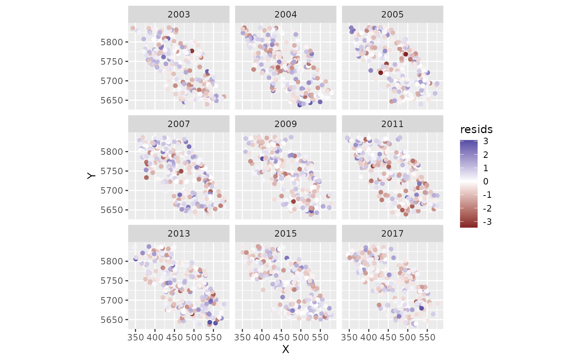
Those were fast to calculate but can look ‘off’ even when the model
is consistent with the data. MCMC-based residuals are more reliable but
slow. We can calculate them through some help from the sdmTMBextra
package. https://github.com/pbs-assess/sdmTMBextra. In practice
you would like want more mcmc_iter and
mcmc_warmup. Total samples is
mcmc_iter - mcmc_warmup. We will also just use the spatial
model here so the vignette builds quickly.
set.seed(123)
samps <- sdmTMBextra::predict_mle_mcmc(m3, mcmc_warmup = 100, mcmc_iter = 101)
#>
#> SAMPLING FOR MODEL 'tmb_generic' NOW (CHAIN 1).
#> Chain 1:
#> Chain 1: Gradient evaluation took 0.010131 seconds
#> Chain 1: 1000 transitions using 10 leapfrog steps per transition would take 101.31 seconds.
#> Chain 1: Adjust your expectations accordingly!
#> Chain 1:
#> Chain 1:
#> Chain 1: WARNING: There aren't enough warmup iterations to fit the
#> Chain 1: three stages of adaptation as currently configured.
#> Chain 1: Reducing each adaptation stage to 15%/75%/10% of
#> Chain 1: the given number of warmup iterations:
#> Chain 1: init_buffer = 15
#> Chain 1: adapt_window = 75
#> Chain 1: term_buffer = 10
#> Chain 1:
#> Chain 1: Iteration: 1 / 101 [ 0%] (Warmup)
#> Chain 1: Iteration: 10 / 101 [ 9%] (Warmup)
#> Chain 1: Iteration: 20 / 101 [ 19%] (Warmup)
#> Chain 1: Iteration: 30 / 101 [ 29%] (Warmup)
#> Chain 1: Iteration: 40 / 101 [ 39%] (Warmup)
#> Chain 1: Iteration: 50 / 101 [ 49%] (Warmup)
#> Chain 1: Iteration: 60 / 101 [ 59%] (Warmup)
#> Chain 1: Iteration: 70 / 101 [ 69%] (Warmup)
#> Chain 1: Iteration: 80 / 101 [ 79%] (Warmup)
#> Chain 1: Iteration: 90 / 101 [ 89%] (Warmup)
#> Chain 1: Iteration: 100 / 101 [ 99%] (Warmup)
#> Chain 1: Iteration: 101 / 101 [100%] (Sampling)
#> Chain 1:
#> Chain 1: Elapsed Time: 27.264 seconds (Warm-up)
#> Chain 1: 0.2 seconds (Sampling)
#> Chain 1: 27.464 seconds (Total)
#> Chain 1:
r <- residuals(m3, "mle-mcmc", mcmc_samples = samps)
qqnorm(r)
qqline(r)See ?residuals.sdmTMB().
Spatial predictions
Now, for the purposes of this example (e.g., visualization), we want
to predict on a fine-scale grid on the entire survey domain. There is a
grid built into the package for Queen Charlotte Sound named
qcs_grid. Our prediction grid also needs to have all the
covariates that we used in the model above.
glimpse(qcs_grid)
#> Rows: 7,314
#> Columns: 5
#> $ X <dbl> 456, 458, 460, 462, 464, 466, 468, 470, 472, 474, 476, 4…
#> $ Y <dbl> 5636, 5636, 5636, 5636, 5636, 5636, 5636, 5636, 5636, 56…
#> $ depth <dbl> 347.08345, 223.33479, 203.74085, 183.29868, 182.99983, 1…
#> $ depth_scaled <dbl> 1.56081222, 0.56976988, 0.36336929, 0.12570465, 0.122036…
#> $ depth_scaled2 <dbl> 2.436134794, 0.324637712, 0.132037240, 0.015801659, 0.01…We can replicate our grid across all necessary years:
grid_yrs <- replicate_df(qcs_grid, "year", unique(pcod$year))Now we will make the predictions on new data:
predictions <- predict(m3, newdata = grid_yrs)Let’s make a small function to help make maps.
plot_map <- function(dat, column) {
ggplot(dat, aes(X, Y, fill = {{ column }})) +
geom_raster() +
coord_fixed()
}There are four kinds of predictions that we get out of the model.
First, we will show the predictions that incorporate all fixed effects and random effects:
plot_map(predictions, exp(est)) +
scale_fill_viridis_c(
trans = "sqrt",
# trim extreme high values to make spatial variation more visible
na.value = "yellow", limits = c(0, quantile(exp(predictions$est), 0.995))
) +
facet_wrap(~year) +
ggtitle("Prediction (fixed effects + all random effects)",
subtitle = paste("maximum estimated biomass density =", round(max(exp(predictions$est))))
)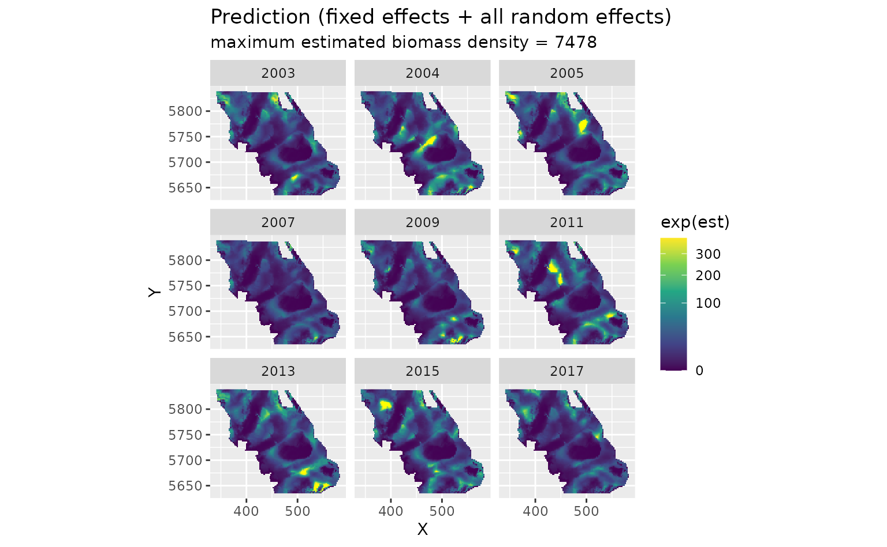
We can also look at just the fixed effects, here only a quadratic effect of depth:
plot_map(predictions, exp(est_non_rf)) +
scale_fill_viridis_c(trans = "sqrt") +
ggtitle("Prediction (fixed effects only)")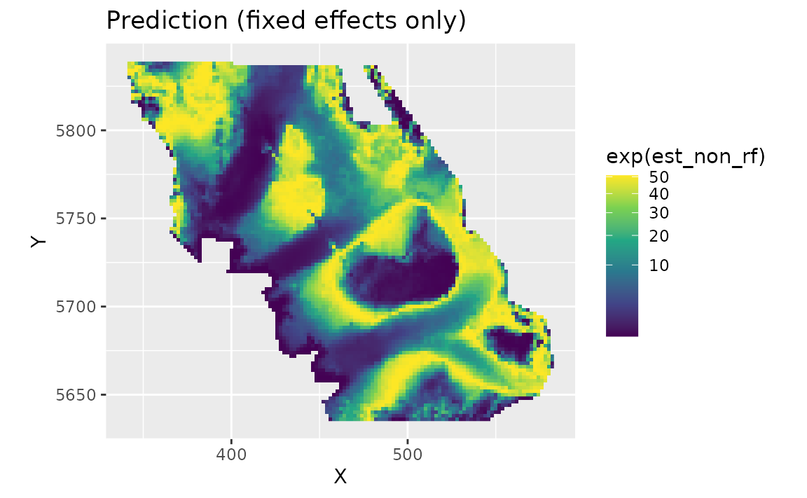
We can look at the spatial random effects that represent consistent deviations in space through time that are not accounted for by our fixed effects. In other words, these deviations represent consistent biotic and abiotic factors that are affecting biomass density but are not accounted for in the model.
plot_map(predictions, omega_s) +
scale_fill_gradient2() +
ggtitle("Spatial random effects only")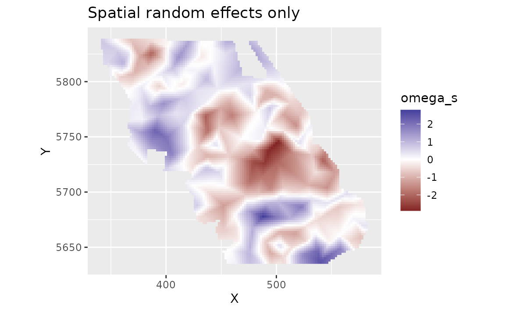
And finally we can look at the spatiotemporal random effects that represent deviation from the fixed effect predictions and the spatial random effect deviations. These represent biotic and abiotic factors that are changing through time and are not accounted for in the model.
plot_map(predictions, epsilon_st) +
scale_fill_gradient2() +
facet_wrap(~year) +
ggtitle("Spatiotemporal random effects only")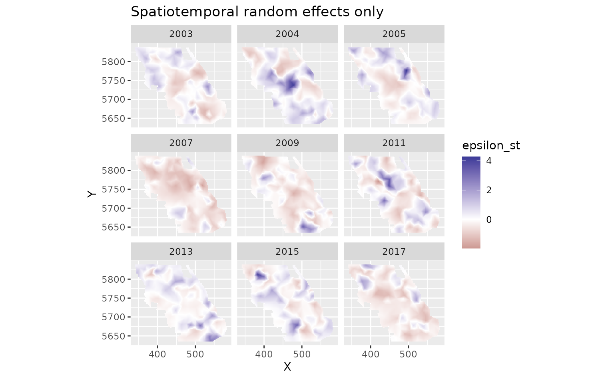
We can also estimate the uncertainty in our spatiotemporal density
predictions using simulations from the joint precision matrix by setting
nsim > 0 in the predict function. Here we generate 100
estimates and use apply() to calculate upper and lower
confidence intervals, a standard deviation, and a coefficient of
variation (CV).
sim <- predict(m3, newdata = grid_yrs, nsim = 100)
sim_last <- sim[grid_yrs$year == max(grid_yrs$year), ] # just plot last year
pred_last <- predictions[predictions$year == max(grid_yrs$year), ]
pred_last$lwr <- apply(exp(sim_last), 1, quantile, probs = 0.025)
pred_last$upr <- apply(exp(sim_last), 1, quantile, probs = 0.975)
pred_last$sd <- round(apply(exp(sim_last), 1, function(x) sd(x)), 2)
pred_last$cv <- round(apply(exp(sim_last), 1, function(x) sd(x) / mean(x)), 2)Plot the CV on the estimates:
ggplot(pred_last, aes(X, Y, fill = cv)) +
geom_raster() +
scale_fill_viridis_c()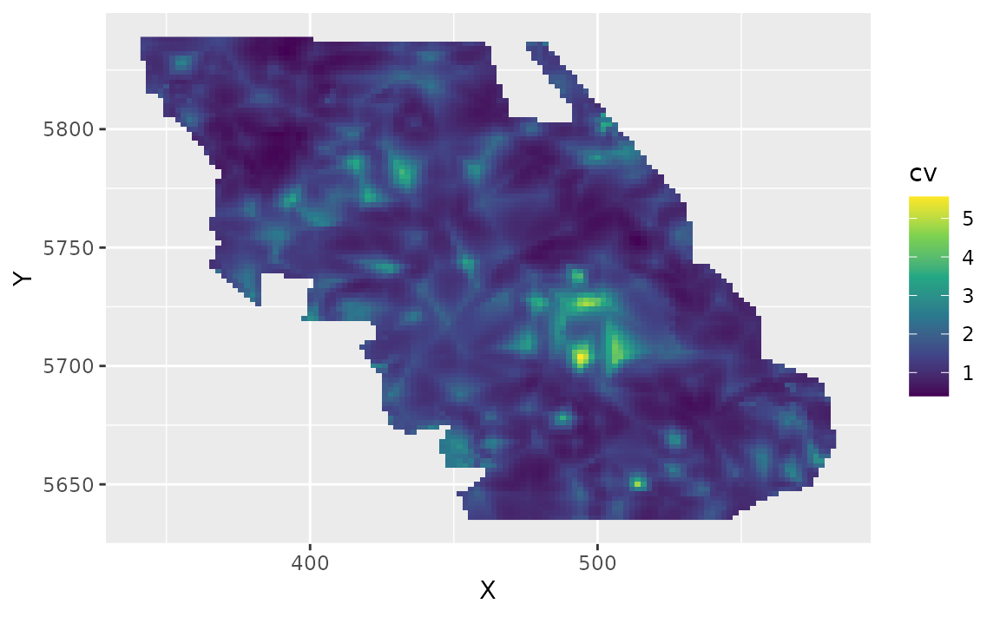
Conditional effects
We can visualize the conditional effect of any covariates by feeding simplified data frames to the predict function that fix covariate values we want fixed (e.g., at means) and vary parameters we want to visualize (across a range of values):
nd <- data.frame(
depth = seq(min(pcod$depth),
max(pcod$depth),
length.out = 100
),
year = 2015L # a chosen year
)
p <- predict(m3, newdata = nd, se_fit = TRUE, re_form = NA)
ggplot(p, aes(depth, exp(est),
ymin = exp(est - 1.96 * est_se),
ymax = exp(est + 1.96 * est_se)
)) +
geom_line() +
geom_ribbon(alpha = 0.4) +
scale_x_continuous() +
coord_cartesian(expand = F) +
labs(x = "Depth (m)", y = "Biomass density (kg/km2)")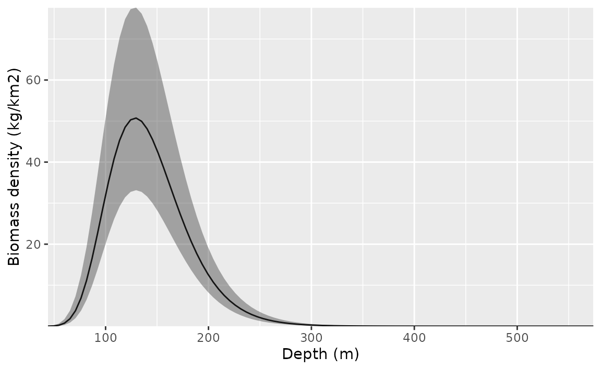
We could also do this with the visreg package. This version is in
link space and the residuals are partial randomized quantile residuals.
See the scale argument in visreg for response scale
plots.
visreg::visreg(m3, "depth")
#> Note what used to be the default sdmTMB residuals (before version 0.4.3.9005)
#> are now `type = 'mle-eb'`. We recommend using the current default `'mle-mvn'`,
#> which takes one sample from the approximate posterior of the random effects or
#> `dharma_residuals()` using a similar approach.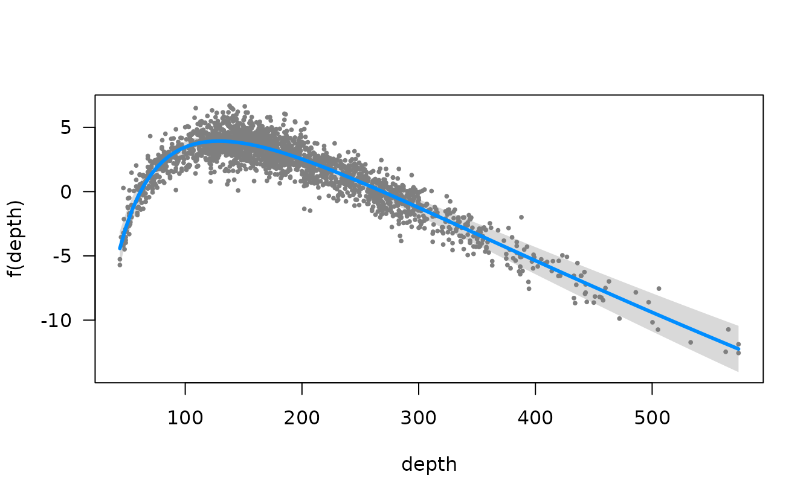
Or the ggeffects package for a marginal effects plot. This will also be faster since it relies on the already estimated coefficients and variance-covariance matrix.
ggeffects::ggeffect(m3, "depth [0:500 by=1]") %>% plot()
#> Warning: Removed 1 row containing missing values or values outside the scale range
#> (`geom_line()`).
Time-varying effects
We could also let the effect of depth vary through time. In this
example, it helps to give each year a separate mean effect
(as.factor(year)). The ~ 0 part of the formula
omits the intercept. For models like this that take longer to fit, we
might want to set silent = FALSE so we can monitor
progress.
m4 <- sdmTMB(
density ~ 0 + as.factor(year),
data = pcod,
time_varying = ~ 0 + depth_scaled + depth_scaled2,
mesh = mesh,
family = tweedie(link = "log"),
spatial = "on",
time = "year",
spatiotemporal = "IID"
)
#> Detected irregular time spacing with an AR(1) or random walk process.
#> Consider filling in the missing time slices with `extra_time`.
#> `extra_time = c(2006, 2008, 2010, 2012, 2014, 2016)`
#> Warning in sqrt(diag(cov)): NaNs produced
#> Warning: The model may not have converged: non-positive-definite Hessian
#> matrix.
m4
#> Spatiotemporal model fit by ML ['sdmTMB']
#> Formula: density ~ 0 + as.factor(year)
#> Mesh: mesh (isotropic covariance)
#> Time column: year
#> Data: pcod
#> Family: tweedie(link = 'log')
#> Warning in sqrt(diag(object$cov.fixed)): NaNs produced
#> Warning in sqrt(diag(object$cov.fixed)): NaNs produced
#> Warning in sqrt(diag(object$cov.fixed)): NaNs produced
#> Warning in sqrt(diag(object$cov.fixed)): NaNs produced
#> Warning in sqrt(diag(object$cov.fixed)): NaNs produced
#> Warning in sqrt(diag(object$cov.fixed)): NaNs produced
#> Warning in sqrt(diag(object$cov.fixed)): NaNs produced
#> Warning in sqrt(diag(object$cov.fixed)): NaNs produced
#> Warning in sqrt(diag(object$cov.fixed)): NaNs produced
#> Warning in sqrt(diag(object$cov.fixed)): NaNs produced
#> Warning in sqrt(diag(object$cov.fixed)): NaNs produced
#> Warning in sqrt(diag(object$cov.fixed)): NaNs produced
#> Warning in sqrt(diag(object$cov.fixed)): NaNs produced
#> Warning in sqrt(diag(object$cov.fixed)): NaNs produced
#> Warning in sqrt(diag(object$cov.fixed)): NaNs produced
#> Warning in sqrt(diag(object$cov.fixed)): NaNs produced
#> Warning in sqrt(diag(object$cov.fixed)): NaNs produced
#> Warning in sqrt(diag(object$cov.fixed)): NaNs produced
#> Warning in sqrt(diag(object$cov.fixed)): NaNs produced
#> Warning in sqrt(diag(object$cov.fixed)): NaNs produced
#> Warning in sqrt(diag(object$cov.fixed)): NaNs produced
#> Warning in sqrt(diag(object$cov.fixed)): NaNs produced
#> Warning in sqrt(diag(object$cov.fixed)): NaNs produced
#> Warning in sqrt(diag(object$cov.fixed)): NaNs produced
#> Warning in sqrt(diag(object$cov.fixed)): NaNs produced
#> Warning in sqrt(diag(object$cov.fixed)): NaNs produced
#> Warning in sqrt(diag(object$cov.fixed)): NaNs produced
#> Warning in sqrt(diag(object$cov.fixed)): NaNs produced
#> Warning in sqrt(diag(object$cov.fixed)): NaNs produced
#> Warning in sqrt(diag(object$cov.fixed)): NaNs produced
#> Warning in sqrt(diag(object$cov.fixed)): NaNs produced
#> Warning in sqrt(diag(object$cov.fixed)): NaNs produced
#> Warning in sqrt(diag(object$cov.fixed)): NaNs produced
#> Warning in sqrt(diag(object$cov.fixed)): NaNs produced
#>
#> coef.est coef.se
#> as.factor(year)2003 3.36 0.30
#> as.factor(year)2004 4.04 0.28
#> as.factor(year)2005 3.77 0.28
#> as.factor(year)2007 2.64 0.30
#> as.factor(year)2009 2.65 0.29
#> as.factor(year)2011 3.72 0.29
#> as.factor(year)2013 3.51 0.27
#> as.factor(year)2015 3.76 0.28
#> as.factor(year)2017 3.21 0.30
#>
#> Time-varying parameters:
#> coef.est coef.se
#> depth_scaled-2003 -0.96 0.08
#> depth_scaled-2004 -0.96 0.08
#> depth_scaled-2005 -0.96 0.08
#> depth_scaled-2007 -0.96 0.08
#> depth_scaled-2009 -0.96 0.08
#> depth_scaled-2011 -0.96 0.08
#> depth_scaled-2013 -0.96 0.08
#> depth_scaled-2015 -0.96 0.08
#> depth_scaled-2017 -0.96 0.08
#> depth_scaled2-2003 -1.50 0.23
#> depth_scaled2-2004 -1.70 0.17
#> depth_scaled2-2005 -1.68 0.22
#> depth_scaled2-2007 -1.82 0.28
#> depth_scaled2-2009 -0.99 0.17
#> depth_scaled2-2011 -2.02 0.25
#> depth_scaled2-2013 -1.09 0.12
#> depth_scaled2-2015 -1.80 0.22
#> depth_scaled2-2017 -2.10 0.26
#>
#> Dispersion parameter: 10.86
#> Tweedie p: 1.50
#> Matérn range: 13.58
#> Spatial SD: 1.63
#> Spatiotemporal IID SD: 1.66
#> ML criterion at convergence: 6251.146
#>
#> See ?tidy.sdmTMB to extract these values as a data frame.
#>
#> **Possible issues detected! Check output of sanity().**
AIC(m4)
#> [1] 12534.29To plot these, we make a data frame that contains all combinations of
the time-varying covariate and time. This is easily created using
expand.grid() or tidyr::expand_grid().
nd <- expand.grid(
depth_scaled = seq(min(pcod$depth_scaled) + 0.2,
max(pcod$depth_scaled) - 0.2,
length.out = 50
),
year = unique(pcod$year) # all years
)
nd$depth_scaled2 <- nd$depth_scaled^2
p <- predict(m4, newdata = nd, se_fit = TRUE, re_form = NA)
#> Warning in sqrt(diag(cov)): NaNs produced
ggplot(p, aes(depth_scaled, exp(est),
ymin = exp(est - 1.96 * est_se),
ymax = exp(est + 1.96 * est_se),
group = as.factor(year)
)) +
geom_line(aes(colour = year), lwd = 1) +
geom_ribbon(aes(fill = year), alpha = 0.1) +
scale_colour_viridis_c() +
scale_fill_viridis_c() +
scale_x_continuous(labels = function(x) round(exp(x * pcod$depth_sd[1] + pcod$depth_mean[1]))) +
coord_cartesian(expand = F) +
labs(x = "Depth (m)", y = "Biomass density (kg/km2)")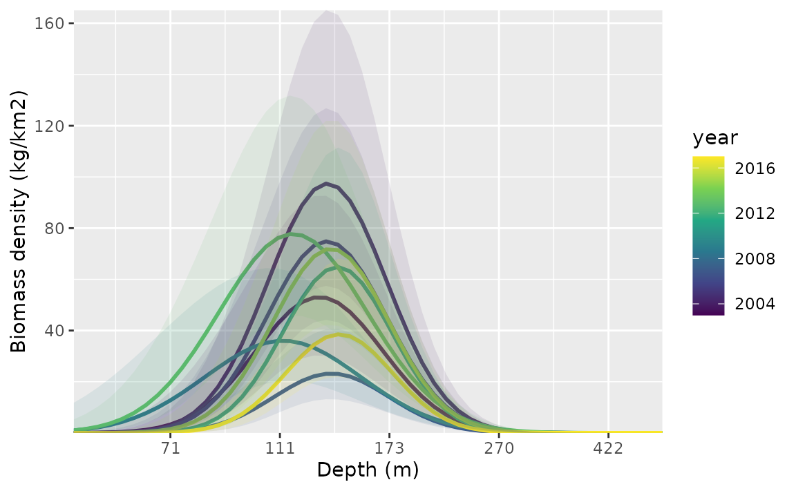